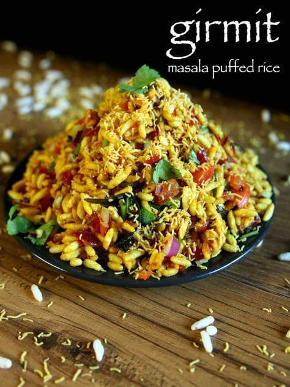

HOME
ABOUT US
SERVICES
SOUTH
NORTH
CHINESE
SNACKS
Desserts
CONTACT

Girmit
it is an excotic south indian cuisine special to karnataka. It is rich in its flavour and nutrients
Ingredients
2 cups puffed rice (murmura)
1/2 cup tamarind chutney
1/4 cup chopped onion
1/4 cup chopped tomato
green chili, finely chopped
1/2 teaspoon red chili powder
1/4 teaspoon garam masala powder
1/4 teaspoon turmeric powder
1/4 teaspoon cumin powder
1/4 teaspoon coriander powder
1/4 teaspoon salt
Sev (fried gram flour noodles) for garnish
Instructions
In a large bowl, combine the puffed rice, tamarind chutney, onion, tomato, green chili, red chili powder, garam masala powder, turmeric powder, cumin powder, coriander powder, and salt.
Top with sev.
Serve immediately and enjoy!
Tips:
For a spicier girmit, add more red chili powder.
You can also add other vegetables to the girmit mixture, such as carrots, peas, or cucumbers.
Girmit can be served warm or cold
Use fresh tamarind chutney for the best flavor.
If you are making girmit ahead of time, store the puffed rice mixture and the tamarind chutney separately. When you are ready to serve, combine the puffed rice mixture and the tamarind chutney and top with sev.